I'm Naga. South Asian words that became English. Nothing in this book is filler — if a page is here, a real speller lost a real word without it.
1
Read the story
Each chapter opens as a storyboard. Vex sets the trap; the crew talks you out of it.
2
Steal the pro move
The dark box is how a champion thinks on stage. It works on brand-new words too.
3
Spell out loud, then write
Say it, spell it aloud, write it. The order matters — it is how the stage will ask for it.
4
Pass the checkpoint
A short quiz on the chapter, gated at 90%. Circle your answers, then verify at the back.
5
Play the game, then revise
Every chapter ends with a fun game, answer key at the back. Revise all words at the end and circle the ones you can spell and define.
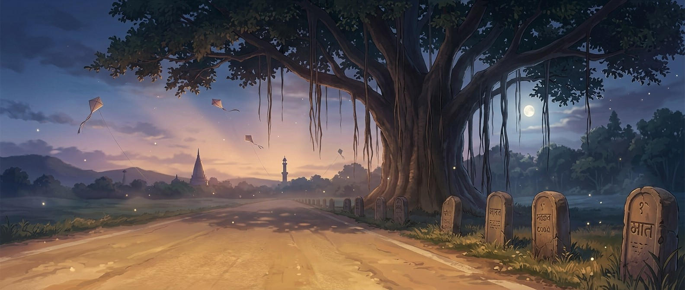
Bizzing Bee · The Grand Trunk Road1
The Grand Trunk RoadThe cast
Bizzy — and this book's guide, Naga
The crew of Vol. 14
The ensemble for this volume. They host the drills and checkpoints; the work is still yours.
Bizzy — The little bee who spells the world back together, one petal at a time. · Naga — The mythical serpent-guardian, wisest of the pack.
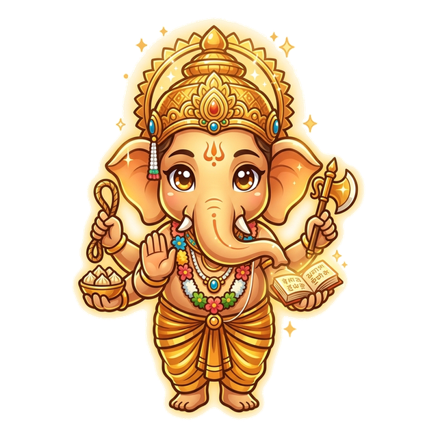
Ganesha
OVR 80
Grandmaster of the Pantheon P…
The gentle remover of obstacles, with an elephant’s head and a kind heart.
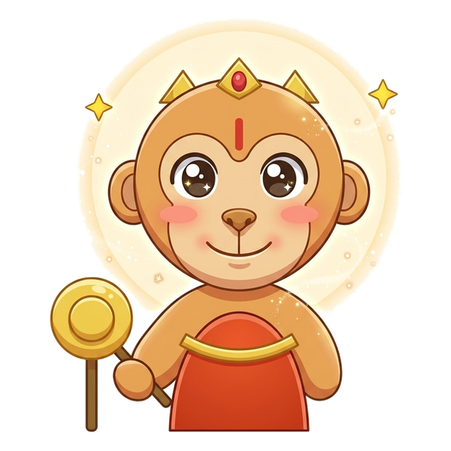
Hanuman
OVR 73
Champion of the Pantheon Peaks
The mighty, devoted hero who can grow as large as a hill or leap the sea.
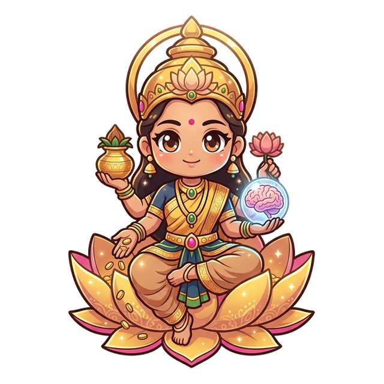
Lakshmi
OVR 74
Champion of the Pantheon Peaks
The graceful goddess of prosperity, seated on a blooming lotus.
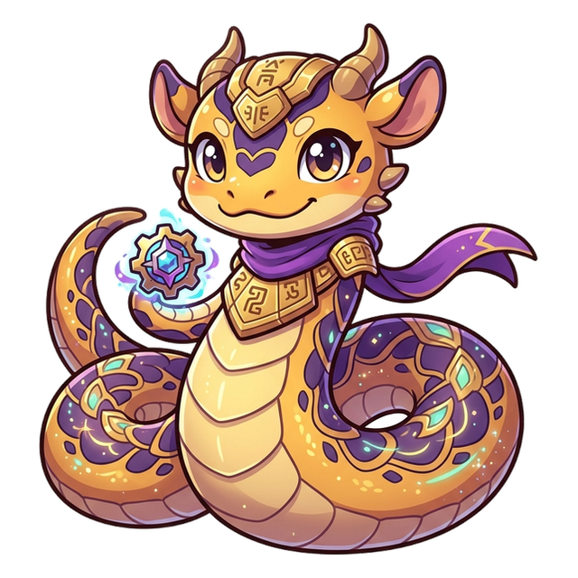
Vasuki
OVR 71
Champion of the Colossal Ages
The colossal serpent named for the king of snakes.
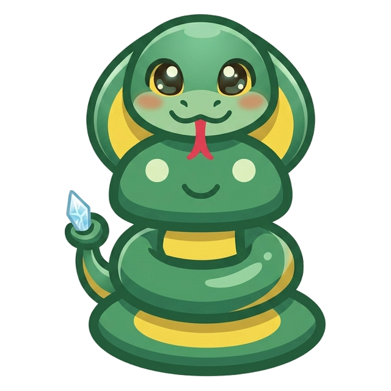
King Cobra
OVR 70
Speller of the Serpent Pack
Spreads its hood wide and stands tall to spell.
Python
OVR 71
Speller of the Serpent Pack
Patient and powerful, never rushes a word.
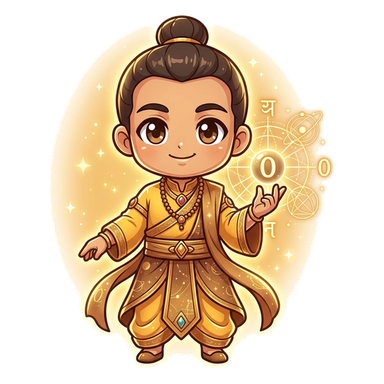
Aryabhatta
OVR 87
Grandmaster of the Hall of Br…
The ancient Indian stargazer who helped give the world zero.
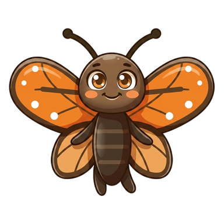
Monarch
OVR 49
Rookie of the Wildhearts
Travels farther than any butterfly should.
And the other one
Vex, the word-moth. Every trap in this book is one it has watched a speller fall into on a real stage.
Bizzing Bee · The Grand Trunk Road2
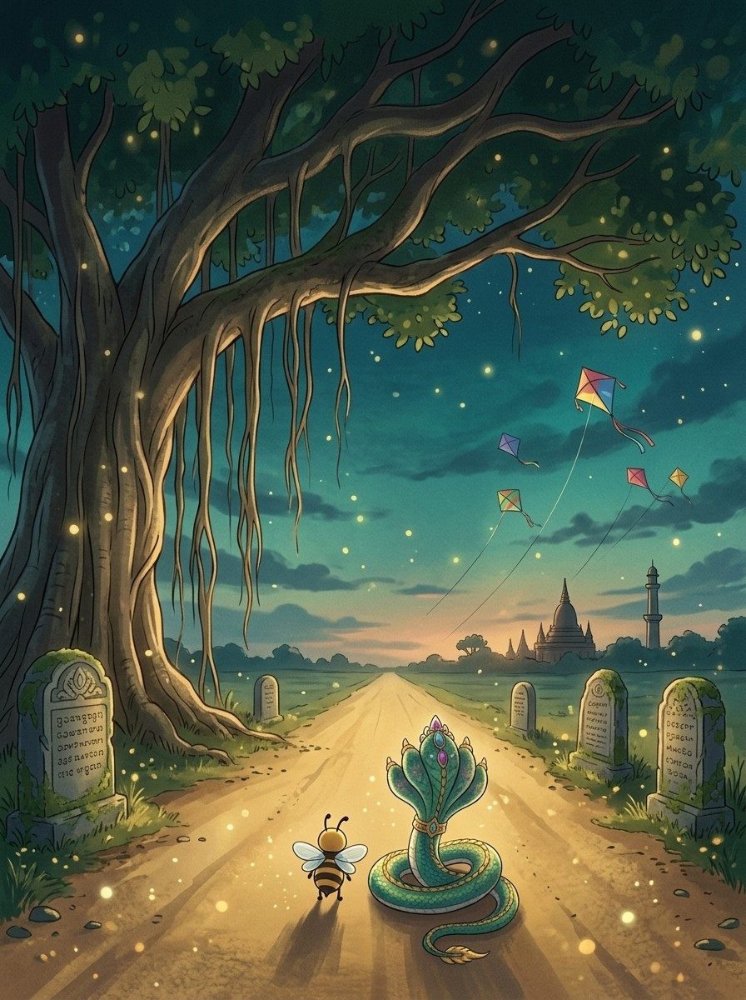
WELCOME TO
The Grand Trunk Road
Fifteen hundred miles of road, and a word waiting at every milestone. Naga knows them all.
Bizzing Bee · The Grand Trunk Road3
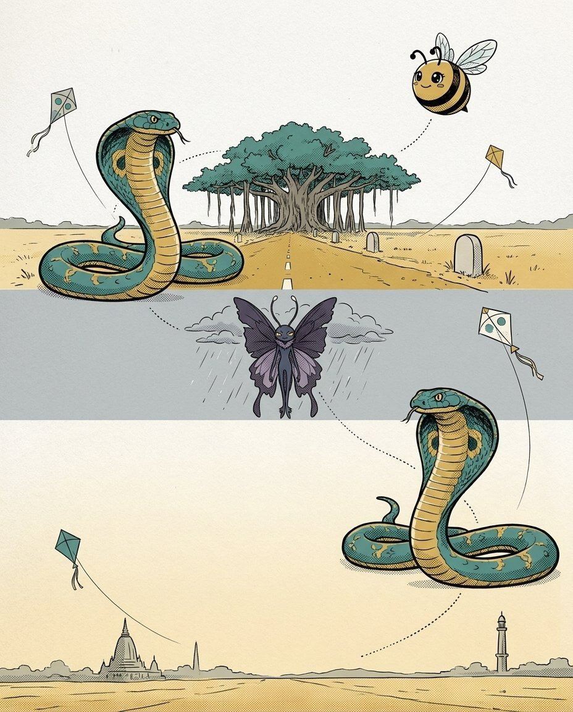
1South Asian Words in English · the Grand Trunk RoadWords from the yoga mat — Sanskrit at the microphone
BizzyA language that spells fair
NagaDesigned to be exact
VexThe vowel you swallow
King CobraGive every vowel its letter
♫ narratedturn the page — the whole trick, explained →
4
Chapter 1 · Words from the yoga mat — Sanskrit at the mic…The idea · ★★★
The big idea
Sanskrit is the oldest language still feeding English new words, and it hands them over almost unchanged. That is the gift: what you hear is very nearly what you write. Long vowels stay long, every letter earns its place, and almost nothing is silent.
The pro move
ASANA
Say it. AH-suh-nuh
Spell it. A · S · A · N · A
The rule. Sanskrit words are written the way they sound; trust the syllables
Watch for. the schwa in the middle is still an A, never a U
One letter, one sound
Sanskrit spelling was designed by grammarians to be exact. Say the word slowly and write what you hear — that strategy fails in French and works here.
Vowels do not hide
English loves to mumble unstressed vowels into schwa. In these words the vowel keeps its written identity: asana, not asuna; prana, not pruna.
The -a ending
A huge share of these words end in a plain -a: yoga, karma, asana, prana, dharma. When you hear that soft final "uh", reach for A first.
Vex alert
PRA + NA — the opening PR is a real cluster, not "puh-rana"
Check yourself
Book closed: yoga · mantra · asana, out loud, full words. At this level, almost right is still an elimination.
💬
Bee Break · someone said it better
“You can't build a peaceful world on empty stomachs and human misery.”
— Norman Borlaug, agricultural scientist
Bizzing Bee · The Grand Trunk Road5
Chapter 1 · Words from the yoga mat — Sanskrit at the mic…Practice · ★★★
Say it. Spell it out loud. Write it.
yoga
/ YOH-guh / · /ˈjoʊɡə/
Hindu discipline aimed at training the consciousness for a state of perfect…
hook: YOH-guh — the O is long, the ending is a plain A
mantra
/ MA-ntruh / · /ˈmæntrə/
a commonly repeated word or phrase
hook: MAN + TRA — two clean beats, no vowel between N and T
asana
/ AH-suh-nuh / · /ˈɑsənə/
(Hinduism) a posture or manner of sitting (as in the practice of yoga)
hook: three A vowels; the middle one still writes as A
prana
/ PRAH-nuh / · /ˈprɑnə/
In Hindu philosophy and yoga
hook: PRA + NA — the opening PR is a real cluster, not "puh-rana"
karma
/ KAH-rmuh / · /ˈkɑrmə/
(Hinduism and Buddhism) the effects of a person's actions that determine his…
hook: KAR + MA — R then M, nothing between them
dharma
/ DAH-rmuh / · /ˈdɑrmə/
basic principles of the cosmos
hook: DH is one sound; the H rides the D and cannot be dropped
Bizzing Bee · The Grand Trunk Road6
Chapter 1 · Words from the yoga mat — Sanskrit at the mic…Practice · ★★★
Say it. Spell it out loud. Write it.
nirvana
/ nih-RVAH-nuh / · /nɪˈrvɑnə/
(Hinduism and Buddhism) the beatitude that transcends the cycle of reincarnation…
hook: NIR + VA + NA — three beats, the middle A is long
chakra
/ CHUK-ruh / · /ˈtʃʌkrə/
One of seven spiritual energy centers believed in yoga to exist along the human…
hook: CH + A + KRA — the KR cluster stays together
guru
/ GOO-roo / · /ˈɡuru/
a Hindu or Buddhist religious leader and spiritual teacher
hook: two U vowels, both long: GOO-roo
sutra
/ SOO-trah / · /ˈsutrɑ/
a rule or aphorism in Sanskrit literature or a group of aphoristic doctrinal…
hook: SU + TRA — the same -TRA ending as mantra
avatar
/ A-vuh-tahr / · /ˈævətɑr/
a new personification of a familiar idea
hook: A · VA · TAR — three As, and it ends in R, not A
yogi
/ YOH-gee / · /ˈjoʊɡi/
United States baseball player (born 1925)
hook: yoga with an I: the one in this family that does not end in A
Bizzing Bee · The Grand Trunk Road7
Chapter 1 · Words from the yoga mat — Sanskrit at the mic…Checkpoint · ★★★
Lakshmi · Champion of the Pantheon Peaks runs the checkpoint
Do you own the idea?
This checkpoint is gated at 90% — five of six, minimum. Circle, then verify at the back. Lakshmi's power is Big Brain — borrow it.
1. What does asana mean?
Aa rule or aphorism in Sanskrit literature or a group of aphoristic doctrinal…
B(Hinduism) a posture or manner of sitting (as in the practice of yoga)
C(Hinduism and Buddhism) the beatitude that transcends the cycle of reincarnation…
Da Hindu or Buddhist religious leader and spiritual teacher
2. What does guru mean?
AUnited States baseball player (born 1925)
Ba Hindu or Buddhist religious leader and spiritual teacher
C(Hinduism) a posture or manner of sitting (as in the practice of yoga)
Da commonly repeated word or phrase
3. “three A vowels; the middle one still writes as A” — which word is that about?
Aguru
Bsutra
Casana
Dyogi
4. Which word belongs to this chapter’s family?
Aeducate
Basana
Cinvert
Dtableau
Dictation round
Hand this page to anyone nearby. They read the words from the answer key (Ch. 1 dictation, at the back) — you write, no peeking.
1.
2.
Bizzing Bee · The Grand Trunk Road8
Chapter 1 · Words from the yoga mat — Sanskrit at the mic…Game · ★★★
Hanuman's puzzle page
Crossword
1
2
3
4
5
6
7
8
9
Across
4. (Hinduism and Buddhism) the beatitude that transcends the cycle of reincarnation…
6. One of seven spiritual energy centers believed in yoga to exist along the human…
8. a rule or aphorism in Sanskrit literature or a group of aphoristic doctrinal…
9. In Hindu philosophy and yoga
Down
1. a commonly repeated word or phrase
2. (Hinduism and Buddhism) the effects of a person's actions that determine his…
3. basic principles of the cosmos; also: an ancient sage in Hindu mythology worshipped…
5. Hindu discipline aimed at training the consciousness for a state of perfect…
7. (Hinduism) a posture or manner of sitting (as in the practice of yoga)
Bizzing Bee · The Grand Trunk Road9
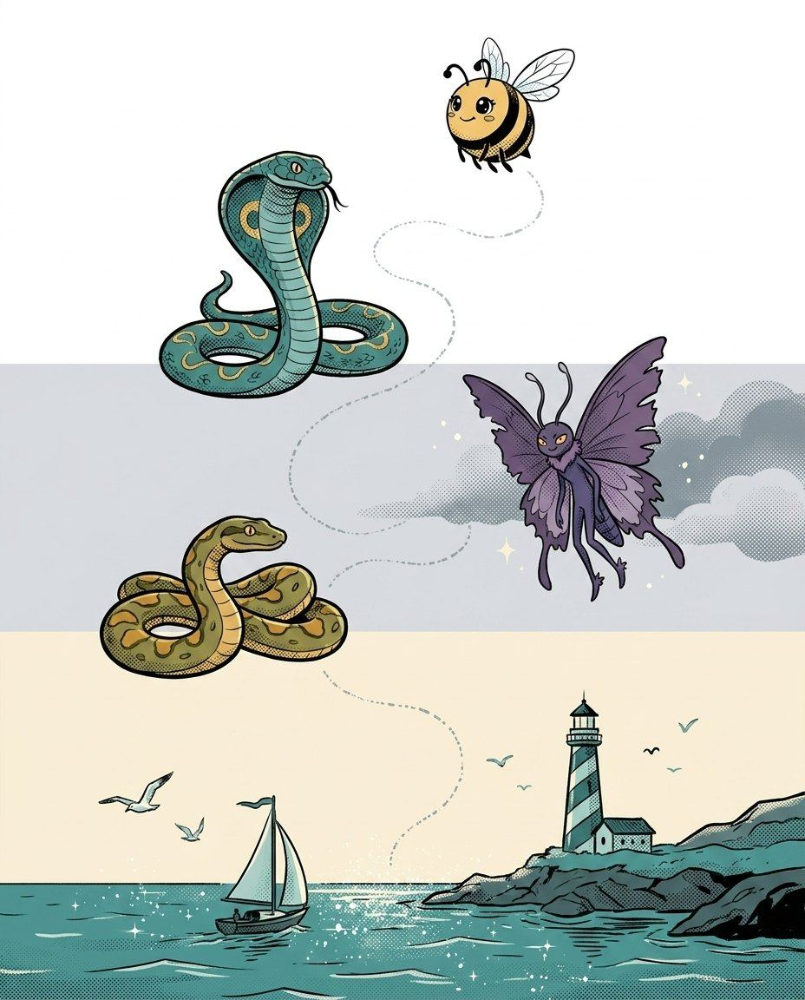
2South Asian Words in English · the Wide StraitThe aspirated letters — bh, dh, gh, kh, th
BizzyOne sound, two letters
NagaThe H is a letter, not decoration
VexYour ear will not save you
PythonAsk, then test
♫ narratedturn the page — the whole trick, explained →
10
Chapter 2 · The aspirated letters — bh, dh, gh, kh, thThe idea · ★★★
The big idea
This is where South Asian words are actually lost. Indian languages pair many consonants with a breath: bh, dh, gh, kh, jh, th. English ears hear one sound and write one letter, and the H disappears. The H is not decoration — it is a separate letter of the original alphabet.
The pro move
DHARMA
Say it. DAR-muh
The trap. your ear hears a plain D
The truth. the original letter is DH — D plus breath
The move. ask for the language; if the answer is Sanskrit or Hindi, test DH before D
Five pairs to know
BH, DH, GH, JH and KH each write one sound in English but two letters on paper. Learn them as pairs and the H stops surprising you.
Say it with the breath
Practise puffing the H: d-hARma, b-HANgra. Exaggerating the breath while you study builds the habit of writing the H under pressure.
Where the H hides
The H almost always follows its consonant, never precedes it: it is GH not HG, DH not HD. If you can hear the puff, put H second.
Vex alert
BH — a B with a breath; the H is the whole trap
Sound trap
khaki sounds like cocky, kaki — at the mic, always ask for the meaning.
Check yourself
Book closed: bhangra · ghee · jodhpurs, out loud, full words. At this level, almost right is still an elimination.
3South Asian Words in English · the Grand Trunk RoadWhat you wear — the clothing words
BizzyClothes before words
NagaIt is a place
VexThe doubles are mine
AryabhattaFind the seam
♫ narratedturn the page — the whole trick, explained →
16
Chapter 3 · What you wear — the clothing wordsThe idea · ★★★
The big idea
British traders and soldiers carried home the clothes before the words. Every one of these was a garment first and an English word second, and most keep a spelling that looks nothing like the way an English word "should" look.
The pro move
JODHPURS
Say it. JOD-perz
Spell it. J · O · D · H · P · U · R · S
Break it. jodh · purs
The trap. the silent-sounding DH, then a U you barely hear
Place names became clothes
Jodhpurs from Jodhpur, cashmere from Kashmir, madras from the city, calico from Calicut. If a garment sounds like a place, it probably is one — and place spellings do not simplify.
The -a endings again
kurta, sari, dhoti: short garments, short words, plain vowels. These are the easy half of the family.
Cummerbund is two words
From Persian kamar (waist) plus band (tie). Knowing it is a compound explains the double M and the D at the end.
Vex alert
KUR + TA — a clean K, no H
Sound trap
sari sounds like sorry — at the mic, always ask for the meaning.
Check yourself
Book closed: kurta · jodhpurs · cummerbund, out loud, full words. At this level, almost right is still an elimination.
Bizzing Bee · The Grand Trunk Road17
Chapter 3 · What you wear — the clothing wordsPractice · ★★★
Say it. Spell it out loud. Write it.
kurta
/ KOOR-tuh / · /ˈkurtə/
a loose collarless shirt worn by many people on the Indian subcontinent (usually…
hook: KUR + TA — a clean K, no H
jodhpurs
/ JOD-purz / · /ˈdʒɑdpʌrz/
flared trousers ending at the calves; worn with riding boots
hook: the DH plus the city it came from
cummerbund
/ KUM-er-bund / · /ˈkʌmərbʌnd/
a broad pleated sash worn as formal dress with a tuxedo
hook: double M — Persian kamar (waist) + band
bandanna
/ ban-DAN-uh / · /bænˈdænə/
large and brightly colored handkerchief; often used as a neckerchief
hook: double N in the middle, then a single A
dungaree
/ dun-guh-REE / · /dʌnɡəˈri/
a coarse durable twill-weave cotton fabric
hook: ends -EE; named for Dongri, a Mumbai district
sari
/ SAH-ree / · /ˈsɑri/
a dress worn primarily by Hindu women
hook: the simplest in the family: four letters, both vowels plain
Bizzing Bee · The Grand Trunk Road18
Chapter 3 · What you wear — the clothing wordsPractice · ★★★
Say it. Spell it out loud. Write it.
shawl
/ SHAWL / · /ˈʃɔl/
cloak consisting of an oblong piece of cloth used to cover the head and shoulders
hook: SH then AWL — the W is written even though the vowel swallows it
chintz
/ CHIHNTS / · /ˈtʃɪnts/
a brightly printed and glazed cotton fabric
hook: ends in TZ — from Hindi chint, a spotted cloth
phulkari
/ fool-KAH-ree / · /fulˈkɑri/
A traditional embroidery style from the Punjab region of South Asia, featuring…
hook: PH says F; then UL · KA · RI, all plain vowels
nainsook
/ NAYN-sook / · /ˈneɪnsuk/
a soft lightweight muslin used especially for babies
hook: NAIN + SOOK — a double O in the second half
Bizzing Bee · The Grand Trunk Road19
Chapter 3 · What you wear — the clothing wordsCheckpoint · ★★★
King Cobra · Speller of the Serpent Pack runs the checkpoint
Do you own the idea?
This checkpoint is gated at 90% — five of six, minimum. Circle, then verify at the back. King Cobra's power is Ice Cool — borrow it.
1. What does kurta mean?
Alarge and brightly colored handkerchief; often used as a neckerchief
Bcloak consisting of an oblong piece of cloth used to cover the head and shoulders
Ca brightly printed and glazed cotton fabric
Da loose collarless shirt worn by many people on the Indian subcontinent (usually…
2. What does jodhpurs mean?
Acloak consisting of an oblong piece of cloth used to cover the head and shoulders
Ba soft lightweight muslin used especially for babies
Cflared trousers ending at the calves; worn with riding boots
Da coarse durable twill-weave cotton fabric
3. Which spelling is correct?
Aneinsook
Bnainnsook
Cnainsook
Dnainsok
4. “KUR + TA — a clean K, no H” — which word is that about?
Ajodhpurs
Bkurta
Cshawl
Dcummerbund
5. Which word belongs to this chapter’s family?
Acacophony
Bsagacity
Cautophagy
Dkurta
Dictation round
Hand this page to anyone nearby. They read the words from the answer key (Ch. 3 dictation, at the back) — you write, no peeking.
1.
2.
Bizzing Bee · The Grand Trunk Road20
Chapter 3 · What you wear — the clothing wordsGame · ★★★
Vasuki's puzzle page
Scramble & rescue
Unscramble
inhztc
sair
onoainks
arenuged
halws
rilkphau
Rescue the vowels
ph_lk_r_
sh_wl
c_mm_rb_nd
d_ng_r__
b_nd_nn_
n__ns__k
Bizzing Bee · The Grand Trunk Road21
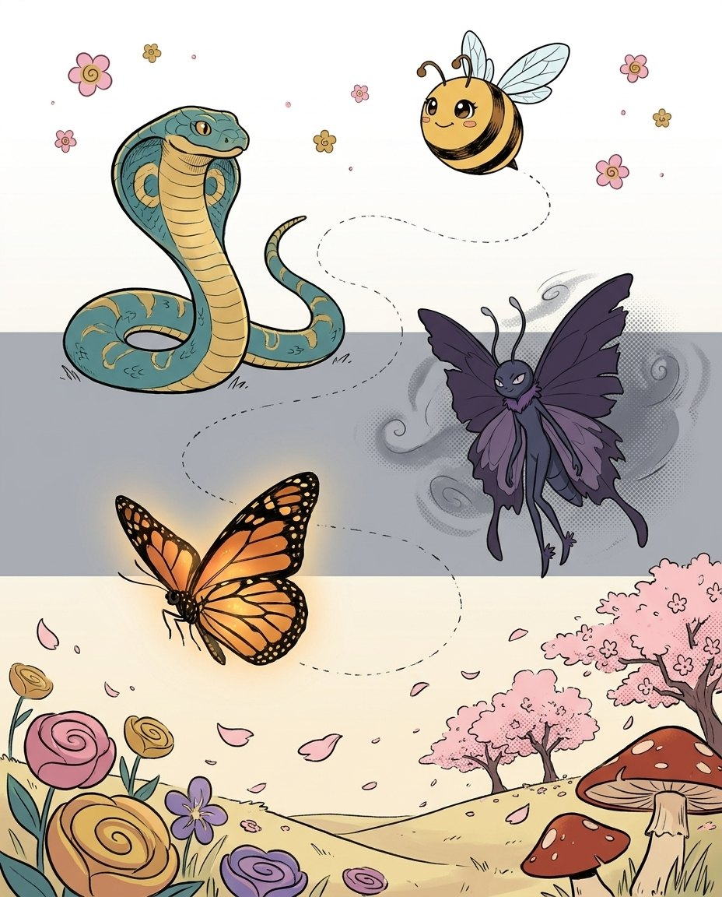
4South Asian Words in English · the MeadowWhat you eat — the kitchen words
BizzyWords you can eat
NagaMostly, yes
VexExcept the long one
MonarchSo I slow down
♫ narratedturn the page — the whole trick, explained →
22
Chapter 4 · What you eat — the kitchen wordsThe idea · ★★★
The big idea
Food words travel first and fastest, and they arrive with their spelling intact because nobody wants to rename dinner. Several of these were spelled by British ears rather than Indian ones, which is exactly why they look strange.
The pro move
MULLIGATAWNY
Say it. mul-ih-guh-TAW-nee
Break it. mul · li · ga · taw · ny
The story. Tamil milagu-tanni, "pepper water" — an English ear wrote it down
The traps. double L, then a schwa A, then AW before -NY
English ears, Indian words
Mulligatawny is what "milagu-tanni" sounded like to a British soldier. When a word was transcribed by ear, expect doubled letters and unexpected vowels.
The schwa problem lands here too
mulligatAwny, tamArind, basmAti: unstressed vowels mumble. Say the word in beats and give each vowel its full value while you study.
Short and safe
ghee, curry, chutney, basmati — these are short, phonetic and reliable. Bank them quickly so your energy goes to the long ones.
Vex alert
TAM + A + RIND — the middle A is a schwa but writes as A
Check yourself
Book closed: tamarind · chutney · basmati, out loud, full words. At this level, almost right is still an elimination.
✨
Bee Break · simile of the page
as clear as crystal
perfectly transparent or understandable
Bizzing Bee · The Grand Trunk Road23
Chapter 4 · What you eat — the kitchen wordsPractice · ★★★
Say it. Spell it out loud. Write it.
tamarind
/ TAM-uh-rind / · /ˈtæmərɪnd/
the pod of a large tropical tree
hook: TAM + A + RIND — the middle A is a schwa but writes as A
chutney
/ CHUH-tnee / · /ˈtʃʌtni/
a spicy condiment made of chopped fruits or vegetables cooked in vinegar and…
hook: CH opening; TN with no vowel between
basmati
/ bahs-MAH-tee / · /bɑsˈmɑti/
a long-grain aromatic rice originally grown in the Himalayas
hook: BAS + MA + TI — three beats, three plain vowels
mulligatawny
/ muh-lih-guh-TAH-nee / · /məlɪɡəˈtɑni/
a soup of eastern India that is flavored with curry
hook: double L, then AW before the -NY ending
curry
/ KUH-ree / · /ˈkʌri/
a spicy dish of meat or vegetables in a richly spiced sauce, often with rice
hook: double R before the Y
ghee
/ GEE / · /ˈɡi/
clarified butter used in Indian cookery
hook: the GH pair plus a double E
Bizzing Bee · The Grand Trunk Road24
Chapter 4 · What you eat — the kitchen wordsPractice · ★★★
Say it. Spell it out loud. Write it.
jaggery
/ JAG-er-ee / · /ˈdʒæɡəri/
unrefined brown sugar made from palm sap
hook: double G in the middle, then -ERY
kedgeree
/ KEJ-uh-ree / · /ˈkɛdʒəri/
a dish of rice and hard-boiled eggs and cooked flaked fish
hook: DG makes the J sound, then -EREE
mango
/ MA-nggoh / · /ˈmæŋɡoʊ/
large evergreen tropical tree cultivated for its large oval fruit
hook: from Tamil mankay; the O ending is the English part
saffron
/ s-A-f-r-uh-n / · /sˈæfrən/
a crocus having showy purple flowers
hook: double F — the Persian root travelled with the spice
Bizzing Bee · The Grand Trunk Road25
Chapter 4 · What you eat — the kitchen wordsCheckpoint · ★★★
Python · Speller of the Serpent Pack runs the checkpoint
Do you own the idea?
This checkpoint is gated at 90% — five of six, minimum. Circle, then verify at the back. Python's power is Mind Palace — borrow it.
1. What does tamarind mean?
Aa dish of rice and hard-boiled eggs and cooked flaked fish
Blarge evergreen tropical tree cultivated for its large oval fruit
Cunrefined brown sugar made from palm sap
Dthe pod of a large tropical tree
2. What does curry mean?
Aclarified butter used in Indian cookery
Ba spicy dish of meat or vegetables in a richly spiced sauce, often with rice
Cthe pod of a large tropical tree
Da long-grain aromatic rice originally grown in the Himalayas
3. Which spelling is correct?
Akedgeree
Bkedgere
Ckeddgeree
Dkidgeree
4. “TAM + A + RIND — the middle A is a schwa but writes as A” — which word is that about?
Abasmati
Bjaggery
Ctamarind
Dmango
5. Which word belongs to this chapter’s family?
Aloquacious
Bdesiccate
Ctamarind
Dcompunction
Dictation round
Hand this page to anyone nearby. They read the words from the answer key (Ch. 4 dictation, at the back) — you write, no peeking.
1.
2.
Bizzing Bee · The Grand Trunk Road26
Chapter 4 · What you eat — the kitchen wordsGame · ★★★
King Cobra's puzzle page
Crossword
1
2
3
4
5
6
7
8
Across
4. unrefined brown sugar made from palm sap
5. a long-grain aromatic rice originally grown in the Himalayas
6. a soup of eastern India that is flavored with curry
7. a dish of rice and hard-boiled eggs and cooked flaked fish
Down
1. a crocus having showy purple flowers
2. a spicy condiment made of chopped fruits or vegetables cooked in vinegar and sugar…
3. the pod of a large tropical tree
6. large evergreen tropical tree cultivated for its large oval fruit
8. clarified butter used in Indian cookery
Bizzing Bee · The Grand Trunk Road27
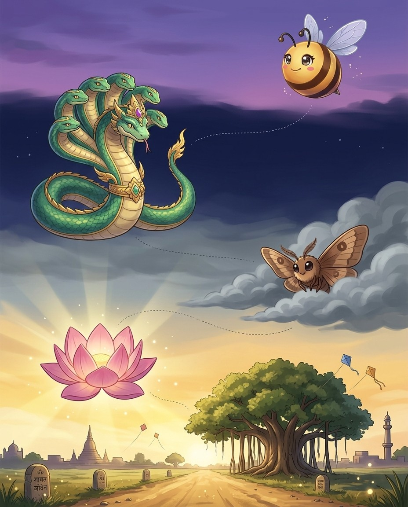
5South Asian Words in English · the Grand Trunk RoadThe Raj words — English that came home changed
BizzyA word with a passport
NagaBoth, in order
VexBorrowed spellings wobble
LotusLearn the family
♫ narratedturn the page — the whole trick, explained →
28
Chapter 5 · The Raj words — English that came home changedThe idea · ★★★
The big idea
For two centuries English lived in South Asia and picked up vocabulary for things it had no word for: a house with a low roof, a bribe, a mob, a cart too heavy to stop. These words feel completely English now, which is what makes their spelling sneaky.
The pro move
JUGGERNAUT
Say it. JUG-er-nawt
Break it. jug · ger · naut
The traps. double G, then -NAUT with an A you cannot hear
The story. Jagannath, a temple chariot so vast it could not be stopped
They hide in plain sight
bungalow, cushy, loot, thug, pundit — nobody hears these as foreign, so nobody double-checks them. That is precisely why they show up in finals.
AU and OO surprises
juggernaut ends -NAUT, not -NOT. loot doubles its O. These vowel choices come from transliteration, not from English patterns.
A house with a Bengali name
bungalow is from bangla — "of Bengal", a Bengali-style house. The -OW ending is an English spelling of a Bengali vowel.
Vex alert
TH then UG — three letters, no trap, easy points
Sound trap
loot sounds like lute · pundit sounds like pandit — at the mic, always ask for the meaning.
Check yourself
Book closed: bungalow · juggernaut · cushy, out loud, full words. At this level, almost right is still an elimination.
Bizzing Bee · The Grand Trunk Road29
Chapter 5 · The Raj words — English that came home changedPractice · ★★★
Say it. Spell it out loud. Write it.
bungalow
/ BUH-ngguh-loh / · /ˈbʌŋɡəloʊ/
a small house with a single story
hook: from bangla, "of Bengal"; ends -OW
juggernaut
/ JUH-ger-nawt / · /ˈdʒʌɡərnɔt/
a massive inexorable force that seems to crush everything in its way
hook: double G plus the -NAUT ending
cushy
/ KUU-shee / · /ˈkʊʃi/
not burdensome or demanding; borne or done easily and without hardship
hook: from khush (pleasant) — one S, then Y
loot
/ LOOT / · /ˈlut/
goods or money obtained illegally
hook: double O; from Hindi lut, plunder
thug
/ THUHG / · /ˈθʌɡ/
an aggressive and violent young criminal
hook: TH then UG — three letters, no trap, easy points
pundit
/ PUH-nduht / · /ˈpʌndət/
someone who has been admitted to membership in a scholarly field
hook: from pandit, a scholar; a plain single-consonant word
Bizzing Bee · The Grand Trunk Road30
Chapter 5 · The Raj words — English that came home changedPractice · ★★★
Say it. Spell it out loud. Write it.
veranda
/ ver-A-nduh / · /vərˈændə/
a porch along the outside of a building (sometimes partly enclosed)
hook: one R, one N, ends in plain A
cheroot
/ sheh-ROOT / · /ʃɛˈrut/
a cigar with both ends cut flat
hook: CH then double O — from Tamil shuruttu, a roll
dacoit
/ dah-KOYT / · /dɑˈkɔɪt/
a member of an armed gang of robbers
hook: OI in the middle; an armed robber
sepoy
/ SEE-poy / · /ˈsipɔɪ/
A native soldier of the Indian subcontinent who was trained and employed in the…
hook: SE + POY — from Persian sipahi, a soldier
Bizzing Bee · The Grand Trunk Road31
Chapter 5 · The Raj words — English that came home changedCheckpoint · ★★★
Aryabhatta · Grandmaster of the Hall of Bright Ideas runs the checkpoint
Do you own the idea?
This checkpoint is gated at 90% — five of six, minimum. Circle, then verify at the back. Aryabhatta's power is Zero Point — invented the number that cracked math open — borrow it.
1. What does sepoy mean?
Aa cigar with both ends cut flat
Ba massive inexorable force that seems to crush everything in its way
Ca member of an armed gang of robbers
DA native soldier of the Indian subcontinent who was trained and employed in the…
2. What does bungalow mean?
Aa small house with a single story
Bgoods or money obtained illegally
Can aggressive and violent young criminal
Da massive inexorable force that seems to crush everything in its way
3. “SE + POY — from Persian sipahi, a soldier” — which word is that about?
Aloot
Bsepoy
Cdacoit
Dveranda
4. Which word belongs to this chapter’s family?
Aperspicacity
Bsepoy
Cveracious
Dcleave
Dictation round
Hand this page to anyone nearby. They read the words from the answer key (Ch. 5 dictation, at the back) — you write, no peeking.
1.
2.
3.
Bizzing Bee · The Grand Trunk Road32
Chapter 5 · The Raj words — English that came home changedGame · ★★★
6South Asian Words in English · the Word JunkyardBeasts, boats and the wild
BizzyAll the vowels are A
NagaTamil built it that way
VexBet wrong once
GaneshaAlmost right is out
♫ narratedturn the page — the whole trick, explained →
34
Chapter 6 · Beasts, boats and the wildThe idea · ★★★
The big idea
When English met animals and boats it had never seen, it borrowed the local name rather than invent one. These words are old, worn smooth by centuries of use, and their spellings preserve sounds that English then reshaped.
The pro move
CATAMARAN
Say it. KAT-uh-muh-ran
Break it. ca · ta · ma · ran
The story. Tamil kattumaram, "tied wood" — two hulls lashed together
The traps. four beats, and the two middle vowels are both schwa but both A
All-A words
catamaran, sambar, bandicoot: when the schwa mumbles, A is the safest bet in this family. Sanskrit and Tamil both lean heavily on A.
Cheetah keeps its H
From Sanskrit chitra, "spotted". The CH and the final H both survive — English would happily have written "cheeta", but the H stayed.
Jungle changed its vowel
From jangal, meaning wasteland or uncultivated ground. English shifted the A to U and softened the meaning to dense forest.
Vex alert
from Sanskrit srgala; ends -AL, not -EL
Check yourself
Book closed: catamaran · cheetah · jungle, out loud, full words. At this level, almost right is still an elimination.
🎈
Bee Break · idiom to drop at dinner
bail out
to rescue someone from trouble, or escape a failing situation
Bizzing Bee · The Grand Trunk Road35
Chapter 6 · Beasts, boats and the wildPractice · ★★★
Say it. Spell it out loud. Write it.
catamaran
/ ka-tuh-mer-AN / · /kætəmərˈæn/
a sailboat with two parallel hulls held together by single deck
hook: four beats, and every vowel is an A
cheetah
/ CHEE-tuh / · /ˈtʃitə/
long-legged spotted cat of Africa and southwestern Asia having nonretractile…
hook: from chitra, spotted; keeps both the CH and the final H
jungle
/ JUH-ngguhl / · /ˈdʒʌŋɡəl/
a location marked by an intense competition and struggle for survival
hook: from jangal — the A became U in English
bandicoot
/ BA-ndih-koot / · /ˈbændɪkut/
any of various agile ratlike terrestrial marsupials of Australia and adjacent…
hook: BANDI + COOT — double O in the tail
nilgai
/ NIL-gy / · /ˈnɪlɡaɪ/
large Indian antelope; male is blue-grey with white markings; female is brownish…
hook: NEEL + GY — nil (blue) + gai (cow), a compound animal
nilgai
/ NIL-gy / · /ˈnɪlɡaɪ/
large Indian antelope; male is blue-grey with white markings; female is brownish…
hook: NIL + GAI — "blue cow"; the AI is one sound
Bizzing Bee · The Grand Trunk Road36
Chapter 6 · Beasts, boats and the wildPractice · ★★★
Say it. Spell it out loud. Write it.
jackal
/ j-A-k-uh-l / · /dʒˈækəl/
a wild dog of Asia and Africa
hook: from Sanskrit srgala; ends -AL, not -EL
dinghy
/ d-IH-ng-ee / · /dˈɪŋi/
a small boat designed as a lifeboat
hook: from dingi; the GH pair before the Y
mongoose
/ MAH-nggoos / · /ˈmɑŋɡus/
agile grizzled Old World viverrine; preys on snakes and rodents
hook: from Marathi mangus; double O, and the plural is mongooses
teak
/ TEEK / · /ˈtik/
hard
hook: from Malayalam tekka — EA for one long sound
Bizzing Bee · The Grand Trunk Road37
Chapter 6 · Beasts, boats and the wildCheckpoint · ★★★
Monarch · Rookie of the Wildhearts runs the checkpoint
Do you own the idea?
This checkpoint is gated at 90% — five of six, minimum. Circle, then verify at the back. Monarch's power is Endless Engine — borrow it.
1. What does bandicoot mean?
Aagile grizzled Old World viverrine; preys on snakes and rodents
Bany of various agile ratlike terrestrial marsupials of Australia and adjacent…
Clarge Indian antelope; male is blue-grey with white markings; female is brownish…
Da sailboat with two parallel hulls held together by single deck
2. What does jungle mean?
Aany of various agile ratlike terrestrial marsupials of Australia and adjacent…
Ba sailboat with two parallel hulls held together by single deck
Ca location marked by an intense competition and struggle for survival
Da wild dog of Asia and Africa
3. Which spelling is correct?
Abandicoot
Bbendicoot
Cbanndicoot
Dbandicot
4. “BANDI + COOT — double O in the tail” — which word is that about?
Ajackal
Bbandicoot
Cnilgai
Dcheetah
5. Which word belongs to this chapter’s family?
Abandicoot
Beloquent
Cequivocation
Dmunificent
Dictation round
Hand this page to anyone nearby. They read the words from the answer key (Ch. 6 dictation, at the back) — you write, no peeking.
1.
2.
Bizzing Bee · The Grand Trunk Road38
Chapter 6 · Beasts, boats and the wildGame · ★★★
Aryabhatta's puzzle page
Scramble & rescue
Unscramble
giyndh
iiagnl
ailgni
kaet
alakcj
gnsoemoo
Rescue the vowels
t__k
m_ng__s_
j_ngl_
d_nghy
n_lg__
b_nd_c__t
Bizzing Bee · The Grand Trunk Road39
7South Asian Words in English · the Grand Trunk RoadThe road words — Persian along the trade routes
BizzyWords that walked
NagaPersian, along the road
VexOne A is easier
HanumanTidy is not correct
♫ narratedturn the page — the whole trick, explained →
40
Chapter 7 · The road words — Persian along the trade rout…The idea · ★★★
The big idea
Persian was the court and trade language across much of South and Central Asia for centuries, so a whole layer of English words reached us through Persian on their way from or to India. They tend to be short, concrete and market-flavoured.
The pro move
BAZAAR
Say it. buh-ZAR
Spell it. B · A · Z · A · A · R
The trap. the double A — one sound, two letters
Compare. caravan has three separate As; bazaar doubles one
Persian doubles vowels
bazaar keeps AA for a single long vowel — a Persian habit English normally refuses. It is the most-missed letter pair in this chapter.
Short and concrete
divan, turban, caravan, khaki: market goods and travel gear. Persian trade words are usually two or three plain syllables.
Shampoo is a command
From Hindi champo — "press!" — the imperative of champna, to knead. It arrived as a head massage, not a bottle.
Vex alert
TUR + BAN — the second vowel is A, not E
Sound trap
bazaar sounds like bizarre · khaki sounds like cocky, kaki — at the mic, always ask for the meaning.
Check yourself
Book closed: bazaar · caravan · divan, out loud, full words. At this level, almost right is still an elimination.
Bizzing Bee · The Grand Trunk Road41
Chapter 7 · The road words — Persian along the trade rout…Practice · ★★★
Say it. Spell it out loud. Write it.
bazaar
/ b-uh-z-AH-r / · /bəzˈɑr/
a marketplace especially in the Middle East
hook: the double A is the whole test
caravan
/ KA-ruh-van / · /ˈkærəvæn/
a procession (of wagons or mules or camels) traveling together in single file
hook: three separate As, no doubling
divan
/ dih-VAN / · /dɪˈvæn/
a long backless sofa (usually with pillows against a wall)
hook: DI + VAN — ends -AN
turban
/ t-UR-b-uh-n / · /tˈʌrbən/
a headdress consisting of a long cloth that is wrapped around a cap or directly…
hook: TUR + BAN — the second vowel is A, not E
shampoo
/ sha-MPOO / · /ʃæˈmpu/
cleansing agent consisting of soaps or detergents used for washing the hair
hook: from champo, "press!"; double O ending
khaki
/ k-AH-k-ee / · /kˈɑki/
means dull yellowish brown
hook: the KH pair; Persian for dusty
Bizzing Bee · The Grand Trunk Road42
Chapter 7 · The road words — Persian along the trade rout…Practice · ★★★
Say it. Spell it out loud. Write it.
cashmere
/ KA-zhmihr / · /ˈkæʒmɪr/
a very soft, warm wool that comes from a special kind of goat
hook: from Kashmir; the place kept its K, the cloth took a C
calico
/ KA-luh-koh / · /ˈkæləkoʊ/
coarse cloth with a bright print
hook: from Calicut; one L, ends -CO
madras
/ MA-druhs / · /ˈmædrəs/
A light cotton cloth with a colorful plaid pattern.
hook: a city that became a cloth and a curry
maharaja
/ mah-her-AH-zhuh / · /ˌmɑhərˈɑˌʒə/
a great raja; a Hindu prince or king in India ranking above a raja
hook: MAHA (great) + RAJA (king) — a compound worth splitting
Bizzing Bee · The Grand Trunk Road43
Chapter 7 · The road words — Persian along the trade rout…Checkpoint · ★★★
Lotus · Champion of the Fold runs the checkpoint
Do you own the idea?
This checkpoint is gated at 90% — five of six, minimum. Circle, then verify at the back. Lotus's power is Quick Draw — borrow it.
1. What does maharaja mean?
Aa great raja; a Hindu prince or king in India ranking above a raja
Ba procession (of wagons or mules or camels) traveling together in single file
Ca very soft, warm wool that comes from a special kind of goat
Dmeans dull yellowish brown
2. What does shampoo mean?
Acleansing agent consisting of soaps or detergents used for washing the hair
Ba headdress consisting of a long cloth that is wrapped around a cap or directly…
Ca marketplace especially in the Middle East
Da procession (of wagons or mules or camels) traveling together in single file
3. Which spelling is correct?
Abazaer
Bbazaarr
Cbezaar
Dbazaar
4. “MAHA (great) + RAJA (king) — a compound worth splitting” — which word is that about?
Acaravan
Bkhaki
Cshampoo
Dmaharaja
5. Which word belongs to this chapter’s family?
Aspectacle
Beloquent
Cdelicious
Dmaharaja
Dictation round
Hand this page to anyone nearby. They read the words from the answer key (Ch. 7 dictation, at the back) — you write, no peeking.
1.
2.
Bizzing Bee · The Grand Trunk Road44
Chapter 7 · The road words — Persian along the trade rout…Game · ★★★
Monarch's puzzle page
Crossword
1
2
3
4
5
6
7
8
Across
3. a very soft, warm wool that comes from a special kind of goat
5. a marketplace especially in the Middle East
6. coarse cloth with a bright print
7. cleansing agent consisting of soaps or detergents used for washing the hair
8. a procession (of wagons or mules or camels) traveling together in single file
Down
1. a headdress consisting of a long cloth that is wrapped around a cap or directly…
2. a great raja; a Hindu prince or king in India ranking above a raja
4. a long backless sofa (usually with pillows against a wall)
Bizzing Bee · The Grand Trunk Road45
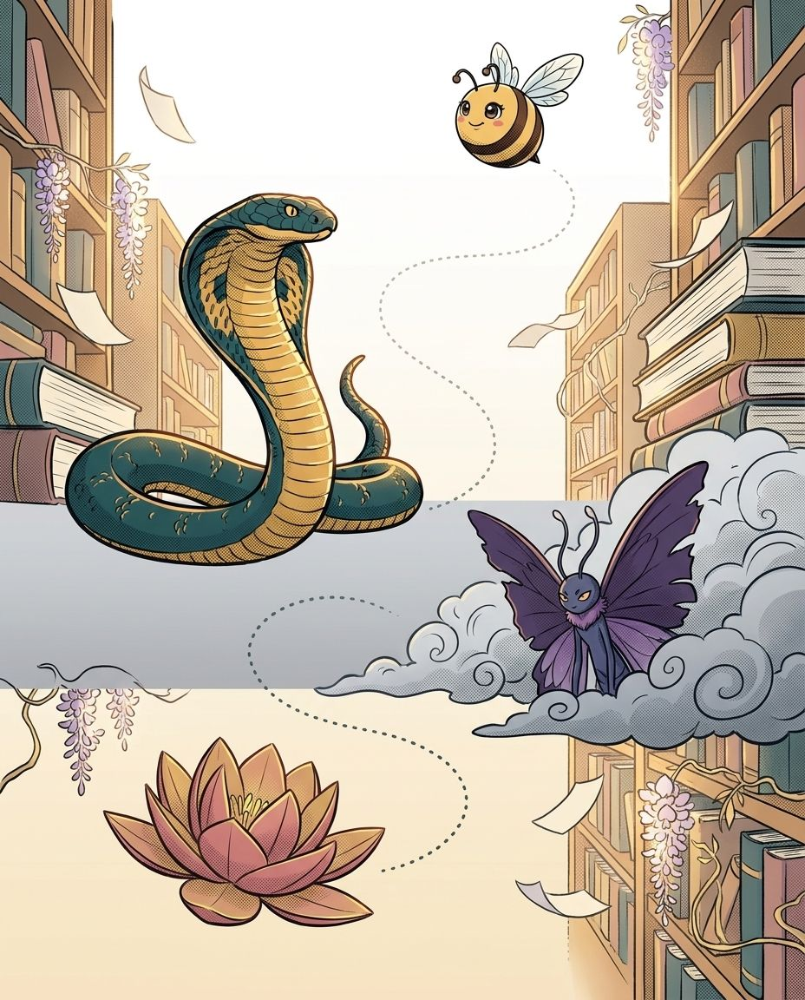
8South Asian Words in English · the Great LibrarySanskrit compounds — long words built from short ones
BizzyA word the length of a road
NagaIt is two words holding hands
VexThen find the seam
LakshmiWalls have bricks
♫ narratedturn the page — the whole trick, explained →
46
Chapter 8 · Sanskrit compounds — long words built from sh…The idea · ★★★
The big idea
Sanskrit builds meaning by welding words together, and it does so freely: a compound can run for many syllables and still be one legal word. English inherited some of these whole. Learn the pieces and the terrifying long ones become arithmetic.
The pro move
MAHATMA
Say it. muh-HAHT-muh
Break it. maha + atma
The pieces. maha = great · atma = soul
The join. the two As merge into one long A: mah-ATma
maha- means great
maharaja (great king), maharani (great queen), mahatma (great soul). One prefix, a whole family of words — and it is always MAHA, never maja or mahar.
Vowels merge at the seam
When Sanskrit joins two words, touching vowels fuse. That is why mahatma has one A where you might expect two — the seam is invisible in the spelling.
Split before you spell
For any long Sanskrit word, find the seam first. Two short words are always easier to spell than one long one, and the seam usually falls at a consonant pair.
Vex alert
TUL + SI — the sacred basil, four letters, no traps
Sound trap
pundit sounds like pandit — at the mic, always ask for the meaning.
Check yourself
Book closed: mahatma · maharaja · ashram, out loud, full words. At this level, almost right is still an elimination.
Bizzing Bee · The Grand Trunk Road47
Chapter 8 · Sanskrit compounds — long words built from sh…Practice · ★★★
Say it. Spell it out loud. Write it.
mahatma
/ muh-HAH-tmuh / · /məˈhɑtmə/
(Hinduism) term of respect for a brahmin sage
hook: maha (great) + atma (soul), vowels merged
maharaja
/ mah-her-AH-zhuh / · /ˌmɑhərˈɑˌʒə/
a great raja; a Hindu prince or king in India ranking above a raja
hook: maha + raja — the same prefix, a new word
ashram
/ A-shrahm / · /ˈæʃrɑm/
a quiet place where people go to meditate, pray, and practice yoga
hook: ASH + RAM — SH then R, no vowel between
chakra
/ CHUK-ruh / · /ˈtʃʌkrə/
One of seven spiritual energy centers believed in yoga to exist along the human…
hook: the KR cluster; a wheel or centre
tulsi
/ TOOL-see / · /ˈtulsi/
A sacred aromatic plant of the mint family native to India
hook: TUL + SI — the sacred basil, four letters, no traps
bindi
/ BIN-dee / · /ˈbɪndi/
A decorative mark worn on the forehead
hook: BIN + DI — from bindu, a dot
Bizzing Bee · The Grand Trunk Road48
Chapter 8 · Sanskrit compounds — long words built from sh…Practice · ★★★
Say it. Spell it out loud. Write it.
swami
/ SWAH-mee / · /ˈswɑmi/
a Hindu religious teacher; used as a title of respect
hook: SW opening cluster, then -AMI
rajah
/ RAH-juh / · /ˈrɑdʒə/
a prince or king in India
hook: the optional final H that raja can also drop
pundit
/ PUH-nduht / · /ˈpʌndət/
someone who has been admitted to membership in a scholarly field
hook: from pandit — the A became U in English
gymkhana
/ jihm-KAH-nuh / · /dʒɪmˈkɑnə/
a meet at which riders and horses display a range of skills and aptitudes
hook: GYM + KHANA; the KH survives mid-word
Bizzing Bee · The Grand Trunk Road49
Chapter 8 · Sanskrit compounds — long words built from sh…Checkpoint · ★★★
Ganesha · Grandmaster of the Pantheon Peaks runs the checkpoint
Do you own the idea?
This checkpoint is gated at 90% — five of six, minimum. Circle, then verify at the back. Ganesha's power is Deep Knowing — borrow it.
1. What does rajah mean?
Asomeone who has been admitted to membership in a scholarly field
Ba quiet place where people go to meditate, pray, and practice yoga
C(Hinduism) term of respect for a brahmin sage
Da prince or king in India
2. What does maharaja mean?
Aa great raja; a Hindu prince or king in India ranking above a raja
Ba Hindu religious teacher; used as a title of respect
Ca quiet place where people go to meditate, pray, and practice yoga
Dsomeone who has been admitted to membership in a scholarly field
3. “the optional final H that raja can also drop” — which word is that about?
Arajah
Bchakra
Cashram
Dbindi
4. Which word belongs to this chapter’s family?
Arajah
Bdecaffeinate
Cperspicacity
Dprecocious
Dictation round
Hand this page to anyone nearby. They read the words from the answer key (Ch. 8 dictation, at the back) — you write, no peeking.
1.
2.
Bizzing Bee · The Grand Trunk Road50
Chapter 8 · Sanskrit compounds — long words built from sh…Game · ★★★
9South Asian Words in English · the Grand Trunk RoadThe spice trail — words older than the empire
BizzyThe oldest borrowing of all
NagaIt is the oldest one here
VexLong journeys break words
VasukiThen I know it
♫ narratedturn the page — the whole trick, explained →
52
Chapter 9 · The spice trail — words older than the empireThe idea · ★★★
The big idea
Some of these came so long ago they no longer feel borrowed at all. Sugar, ginger, candy and camphor reached English through Persian, Arabic, Greek and Latin — but they started in Sanskrit or Tamil, and their spellings carry the whole journey.
The pro move
SUGAR
Say it. SHOOG-er
The journey. Sanskrit sharkara → Persian → Arabic → Latin → French → English
The oddity. the S is pronounced SH, which no English rule predicts
Why. five languages each reshaped it a little
The longest journeys distort most
A word that passed through four languages arrives bent. sugar, ginger and candy all look nothing like their Sanskrit ancestors — and each irregularity is one language’s fingerprint.
Ginger doubles its G sound
From Sanskrit srngavera via Greek and Latin. Both Gs are soft, which is why the spelling looks so unlike its sound.
Candy was a lump of sugar
From khanda, a piece or fragment. The KH lost its H on the road through Persian and Arabic — the opposite of the aspiration rule you learned earlier.
Vex alert
from Sanskrit muska; four letters, no trap
Check yourself
Book closed: sugar · ginger · candy, out loud, full words. At this level, almost right is still an elimination.
Bee Break · Ganesha's true fact
Ganesha is prayed to at the start of anything new — journeys, exams, even spelling bees.
Bizzing Bee · The Grand Trunk Road53
Chapter 9 · The spice trail — words older than the empirePractice · ★★★
Say it. Spell it out loud. Write it.
sugar
/ SHUU-ger / · /ˈʃʊɡər/
a white crystalline carbohydrate used as a sweetener and preservative
hook: from sharkara; the S says SH
ginger
/ JIH-njer / · /ˈdʒɪndʒər/
perennial plants having thick branching aromatic rhizomes and leafy reedlike stems
hook: both Gs soft; a long journey through Greek and Latin
candy
/ KA-ndee / · /ˈkændi/
a rich sweet made of flavored sugar and often combined with fruit or nuts
hook: from khanda, a fragment — the H fell away
camphor
/ KAM-fer / · /ˈkæmfər/
a strong-smelling white substance from a tree, used in medicines and mothballs
hook: PH says F; from Sanskrit karpura
saffron
/ s-A-f-r-uh-n / · /sˈæfrən/
a crocus having showy purple flowers
hook: double F; the spice and the word arrived together
musk
/ MUHSK / · /ˈmʌsk/
A strong-smelling substance used to make perfume.
hook: from Sanskrit muska; four letters, no trap
Bizzing Bee · The Grand Trunk Road54
Chapter 9 · The spice trail — words older than the empirePractice · ★★★
Say it. Spell it out loud. Write it.
lilac
/ LEYE-lak / · /ˈlaɪlæk/
any of various plants of the genus Syringa having large panicles of usually…
hook: through Persian from Sanskrit nila, blue
orange
/ AW-ruhnj / · /ˈɔrəndʒ/
A round, juicy citrus fruit with a thick, colorful peel.
hook: from naranga; English lost the opening N
lemon
/ LEH-muhn / · /ˈlɛmən/
yellow oval fruit with juicy acidic flesh
hook: from limu via Persian and Arabic
sapphire
/ s-A-f-ay-ur / · /sˈæfeɪʌr/
a precious gemstone of rich blue corundum highly valued in jewelry
hook: double P then -IRE; from Sanskrit sanipriya
Bizzing Bee · The Grand Trunk Road55
Chapter 9 · The spice trail — words older than the empireCheckpoint · ★★★
Hanuman · Champion of the Pantheon Peaks runs the checkpoint
Do you own the idea?
This checkpoint is gated at 90% — five of six, minimum. Circle, then verify at the back. Hanuman's power is Quick Draw — borrow it.
1. What does lemon mean?
Aa white crystalline carbohydrate used as a sweetener and preservative
BA round, juicy citrus fruit with a thick, colorful peel.
Ca crocus having showy purple flowers
Dyellow oval fruit with juicy acidic flesh
2. What does sugar mean?
Ayellow oval fruit with juicy acidic flesh
Ba precious gemstone of rich blue corundum highly valued in jewelry
Ca crocus having showy purple flowers
Da white crystalline carbohydrate used as a sweetener and preservative
3. Which spelling is correct?
Agingar
Bginger
Cgenger
Dginnger
4. “from limu via Persian and Arabic” — which word is that about?
Aginger
Bmusk
Csugar
Dlemon
5. Which word belongs to this chapter’s family?
Aaberrant
Bdistraught
Cveracity
Dlemon
Dictation round
Hand this page to anyone nearby. They read the words from the answer key (Ch. 9 dictation, at the back) — you write, no peeking.
1.
2.
Bizzing Bee · The Grand Trunk Road56
Chapter 9 · The spice trail — words older than the empireGame · ★★★
Ganesha's puzzle page
Scramble & rescue
Unscramble
olenm
nigegr
saephrpi
mksu
ndcay
urasg
Rescue the vowels
s_g_r
s_pph_r_
m_sk
c_mph_r
l_l_c
_r_ng_
Bizzing Bee · The Grand Trunk Road57
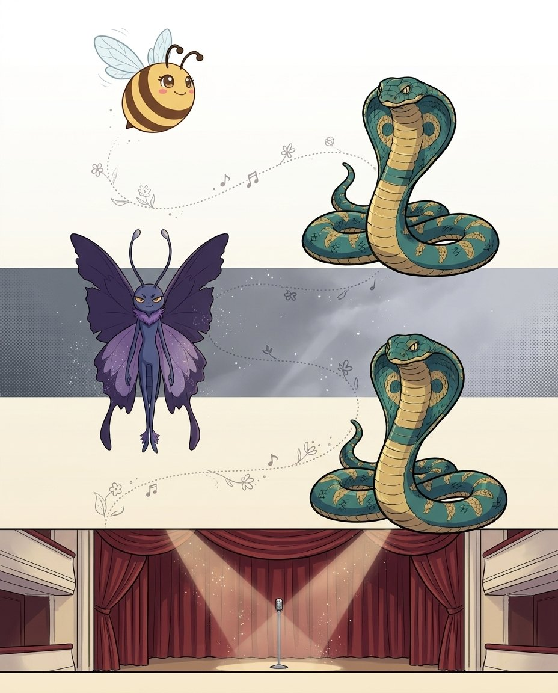
10South Asian Words in English · the Big StageFestival, faith and the arts
BizzyWords with drums in them
NagaTrust it — and clap it
VexBeats are not spelling
King CobraFour beats, four written
♫ narratedturn the page — the whole trick, explained →
58
Chapter 10 · Festival, faith and the artsThe idea · ★★★
The big idea
These are the words English borrowed for things it had no concept for: a dance form, a devotional act, a philosophical stance. They are almost always transcribed straight from the original, which makes them phonetic — and long.
The pro move
KATHAKALI
Say it. kah-thah-KAH-lee
Break it. ka · tha · ka · li
The pattern. KA · THA · KA · LI — the beats almost repeat
The trap. the TH in the middle is aspirated T, and the H must be written
Rhythm beats memory
Dance and music words are built on rhythm, so say them in rhythm. kathakali, bhangra and abhinaya are far easier chanted than spelled letter by letter cold.
Aspiration returns
kathakali, abhinaya, bhangra: the H after T, B and other consonants is doing real work. This chapter is the aspiration chapter’s hardest exam.
Ahimsa is a stance
From a- (not) plus himsa (harm) — non-violence. The prefix a- meaning "not" works exactly like the Greek one you already know.
Vex alert
a- (not) + himsa (harm)
Check yourself
Book closed: kathakali · bhangra · ahimsa, out loud, full words. At this level, almost right is still an elimination.
💬
Bee Break · someone said it better
“Learn to be thankful for what you already have, while you pursue all that you want.”
— Jim Rohn, American motivational speaker
Bizzing Bee · The Grand Trunk Road59
Chapter 10 · Festival, faith and the artsPractice · ★★★
Say it. Spell it out loud. Write it.
kathakali
/ kah-tuh-KAH-lee / · /kɑtəˈkɑli/
A highly stylized classical dance-drama from the Indian state of Kerala…
hook: four beats; the middle TH keeps its H
bhangra
/ BAH-nggruh / · /ˈbɑŋɡrə/
A lively and energetic style of music and dance originating from the Punjab…
hook: the BH pair opens it
ahimsa
/ ah-HIM-sah / · /ɑˈhɪmsɑ/
a Buddhist and Hindu and especially Jainist doctrine holding that all forms of…
hook: a- (not) + himsa (harm)
prana
/ PRAH-nuh / · /ˈprɑnə/
In Hindu philosophy and yoga
hook: the PR cluster; life breath
tulsi
/ TOOL-see / · /ˈtulsi/
A sacred aromatic plant of the mint family native to India
hook: sacred basil; plain and short
bindi
/ BIN-dee / · /ˈbɪndi/
A decorative mark worn on the forehead
hook: from bindu, a dot
Bizzing Bee · The Grand Trunk Road60
Chapter 10 · Festival, faith and the artsPractice · ★★★
Say it. Spell it out loud. Write it.
mantra
/ MA-ntruh / · /ˈmæntrə/
a commonly repeated word or phrase
hook: the -TRA ending, shared with sutra
dharma
/ DAH-rmuh / · /ˈdɑrmə/
basic principles of the cosmos
hook: the DH opening — the chapter’s recurring test
nirvana
/ nih-RVAH-nuh / · /nɪˈrvɑnə/
(Hinduism and Buddhism) the beatitude that transcends the cycle of reincarnation…
hook: NIR + VA + NA; the middle A is long
guru
/ GOO-roo / · /ˈɡuru/
a Hindu or Buddhist religious leader and spiritual teacher
hook: two long U vowels
Bizzing Bee · The Grand Trunk Road61
Chapter 10 · Festival, faith and the artsCheckpoint · ★★★
Lakshmi · Champion of the Pantheon Peaks runs the checkpoint
Do you own the idea?
This checkpoint is gated at 90% — five of six, minimum. Circle, then verify at the back. Lakshmi's power is Big Brain — borrow it.
1. What does guru mean?
AA highly stylized classical dance-drama from the Indian state of Kerala…
Ba commonly repeated word or phrase
Ca Hindu or Buddhist religious leader and spiritual teacher
D(Hinduism and Buddhism) the beatitude that transcends the cycle of reincarnation…
2. What does kathakali mean?
Aa Hindu or Buddhist religious leader and spiritual teacher
B(Hinduism and Buddhism) the beatitude that transcends the cycle of reincarnation…
CA highly stylized classical dance-drama from the Indian state of Kerala…
Da commonly repeated word or phrase
3. “the DH opening — the chapter’s recurring test” — which word is that about?
Abhangra
Bkathakali
Cdharma
Dahimsa
4. Which word belongs to this chapter’s family?
Airresistible
Bunconscionable
Cprevarication
Ddharma
Dictation round
Hand this page to anyone nearby. They read the words from the answer key (Ch. 10 dictation, at the back) — you write, no peeking.
1.
2.
Bizzing Bee · The Grand Trunk Road62
Chapter 10 · Festival, faith and the artsGame · ★★★
Hanuman's puzzle page
Crossword
1
2
3
4
5
6
7
8
9
10
Across
5. (Hinduism and Buddhism) the beatitude that transcends the cycle of reincarnation…
6. A highly stylized classical dance-drama from the Indian state of Kerala…
9. a commonly repeated word or phrase
10. A decorative mark worn on the forehead, especially by Hindu women, traditionally a…
Down
1. basic principles of the cosmos; also: an ancient sage in Hindu mythology worshipped…
2. In Hindu philosophy and yoga
3. A lively and energetic style of music and dance originating from the Punjab region…
4. a Hindu or Buddhist religious leader and spiritual teacher
7. A sacred aromatic plant of the mint family native to India, also called holy basil…
8. a Buddhist and Hindu and especially Jainist doctrine holding that all forms of life…
Bizzing Bee · The Grand Trunk Road63
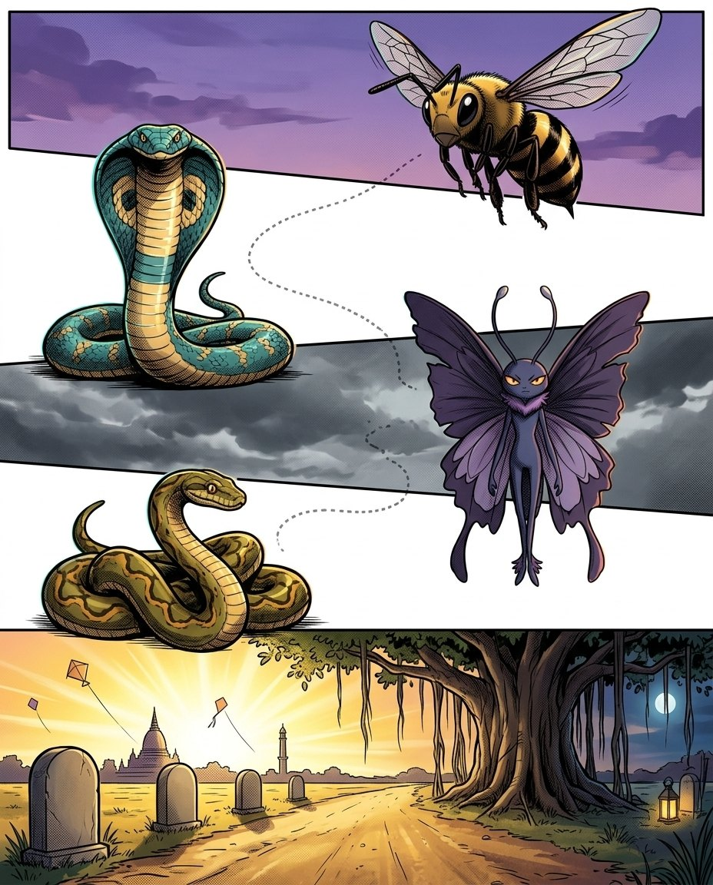
11South Asian Words in English · the Grand Trunk RoadAt the microphone — the South Asian checklist
BizzyOne routine for all of them
NagaTwo questions carry most of it
VexAnd the third thing
PythonThen the checklist has four
♫ narratedturn the page — the whole trick, explained →
64
Chapter 11 · At the microphone — the South Asian checklistThe idea · ★★★
The big idea
Everything in this book collapses into a short routine. South Asian words reward the speller who asks the right two questions and then trusts the syllables, because these words were written to be sounded out.
The pro move
THE ROUTINE
Ask 1. what language? Sanskrit, Hindi, Tamil, Persian — each has a habit
Ask 2. is there a breath? test BH, DH, GH, KH, TH before the plain letter
Then. count the beats out loud
Then. give every unstressed vowel its written value — usually A
Two questions, most of the marks
Language, then aspiration. Those two answers decide the spelling of the majority of South Asian words you will ever face on a stage.
A is the default vowel
When a vowel mumbles in one of these words, A is the highest-probability letter by a wide margin. That single habit is worth more than memorising lists.
Compounds beat length
Long words here are nearly always two short words joined. maha+raja, katta+maram, kamar+band. Find the seam and the length stops mattering.
Vex alert
the double A
Sound trap
bazaar sounds like bizarre — at the mic, always ask for the meaning.
Check yourself
Book closed: bazaar · jodhpurs · mulligatawny, out loud, full words. At this level, almost right is still an elimination.
Bizzing Bee · The Grand Trunk Road65
Chapter 11 · At the microphone — the South Asian checklistPractice · ★★★
Say it. Spell it out loud. Write it.
bazaar
/ b-uh-z-AH-r / · /bəzˈɑr/
a marketplace especially in the Middle East
hook: the double A
jodhpurs
/ JOD-purz / · /ˈdʒɑdpʌrz/
flared trousers ending at the calves; worn with riding boots
hook: the DH
mulligatawny
/ muh-lih-guh-TAH-nee / · /məlɪɡəˈtɑni/
a soup of eastern India that is flavored with curry
hook: the double L and the AW
catamaran
/ ka-tuh-mer-AN / · /kætəmərˈæn/
a sailboat with two parallel hulls held together by single deck
hook: four As
cummerbund
/ KUM-er-bund / · /ˈkʌmərbʌnd/
a broad pleated sash worn as formal dress with a tuxedo
hook: the double M
juggernaut
/ JUH-ger-nawt / · /ˈdʒʌɡərnɔt/
a massive inexorable force that seems to crush everything in its way
hook: the double G and -NAUT
Bizzing Bee · The Grand Trunk Road66
Chapter 11 · At the microphone — the South Asian checklistPractice · ★★★
Say it. Spell it out loud. Write it.
mahatma
/ muh-HAH-tmuh / · /məˈhɑtmə/
(Hinduism) term of respect for a brahmin sage
hook: the merged seam
kathakali
/ kah-tuh-KAH-lee / · /kɑtəˈkɑli/
A highly stylized classical dance-drama from the Indian state of Kerala…
hook: the rhythm and the TH
bandanna
/ ban-DAN-uh / · /bænˈdænə/
large and brightly colored handkerchief; often used as a neckerchief
hook: the double N
chutney
/ CHUH-tnee / · /ˈtʃʌtni/
a spicy condiment made of chopped fruits or vegetables cooked in vinegar and…
hook: the CH and the TN
Bizzing Bee · The Grand Trunk Road67
Chapter 11 · At the microphone — the South Asian checklistCheckpoint · ★★★
Vasuki · Champion of the Colossal Ages runs the checkpoint
Do you own the idea?
This checkpoint is gated at 90% — five of six, minimum. Circle, then verify at the back. Vasuki's power is Endless Engine — borrow it.
1. What does jodhpurs mean?
A(Hinduism) term of respect for a brahmin sage
BA highly stylized classical dance-drama from the Indian state of Kerala…
Cflared trousers ending at the calves; worn with riding boots
Dlarge and brightly colored handkerchief; often used as a neckerchief
2. What does kathakali mean?
Aa broad pleated sash worn as formal dress with a tuxedo
BA highly stylized classical dance-drama from the Indian state of Kerala…
Cflared trousers ending at the calves; worn with riding boots
D(Hinduism) term of respect for a brahmin sage
3. Which spelling is correct?
Abazar
Bbazaarr
Cbazaar
Dbazaer
4. “the DH” — which word is that about?
Akathakali
Bcummerbund
Cjodhpurs
Djuggernaut
5. Which word belongs to this chapter’s family?
Agrotesque
Bjodhpurs
Cimpeccable
Ddemocracy
Dictation round
Hand this page to anyone nearby. They read the words from the answer key (Ch. 11 dictation, at the back) — you write, no peeking.
1.
2.
Bizzing Bee · The Grand Trunk Road68
Chapter 11 · At the microphone — the South Asian checklistGame · ★★★
End of volume. What you keep from it shows up at the microphone, not on this page.
DONE
★
+1
Every word in here also lives in the Bizzing Bee app, with real audio, games and a coach that remembers what you miss. Paper for the muscles, app for the ears.
Bizzing Bee is an independent study project — not affiliated with, sponsored by, or endorsed by the Scripps National Spelling Bee, the North South Foundation, or Merriam-Webster. Competition names appear only to describe what the practice material relates to. Definitions, sentences, hints and stories are written for this project. Typefaces are open-licensed (SIL OFL).

 The Bizzing Bee
The Bizzing Bee